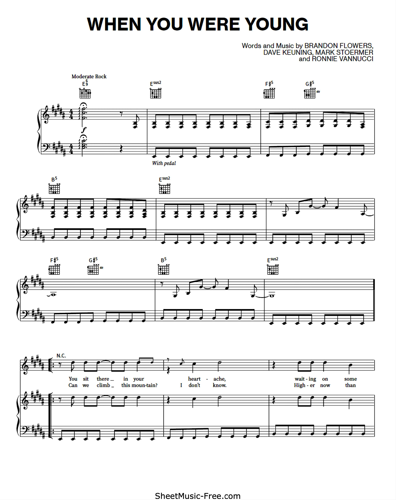
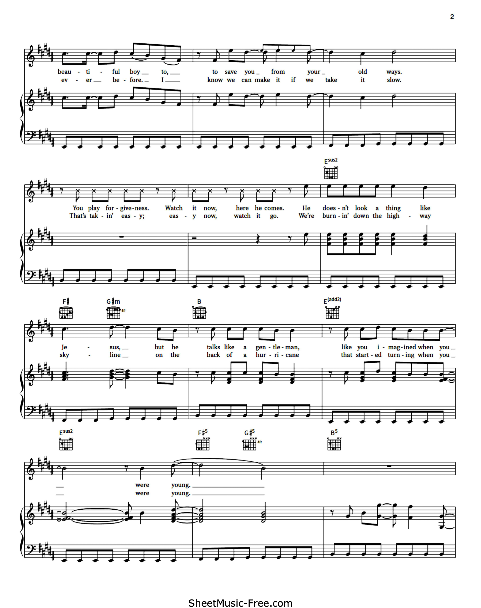
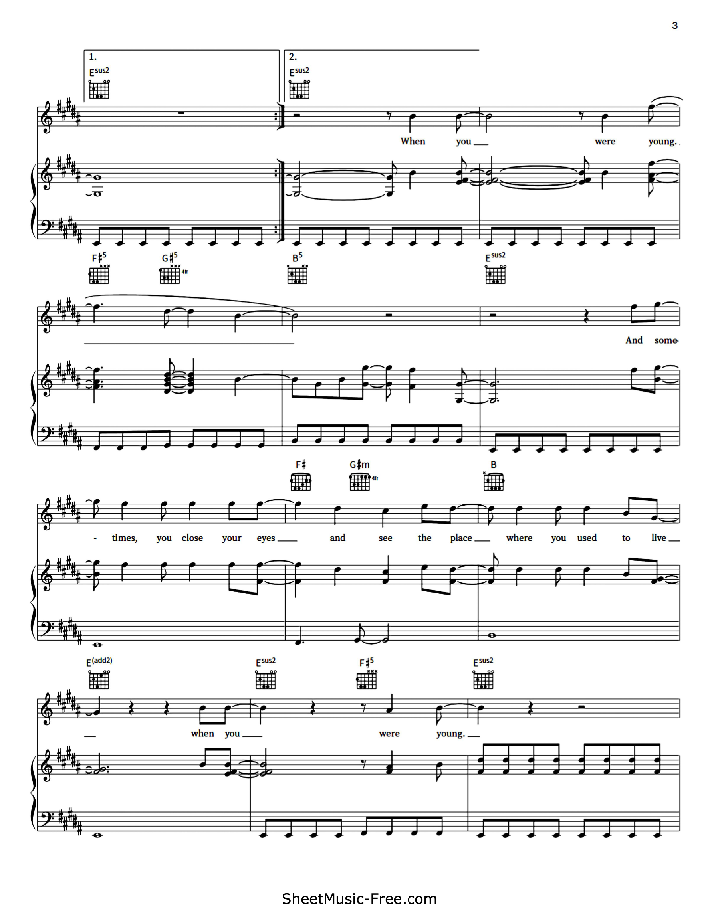
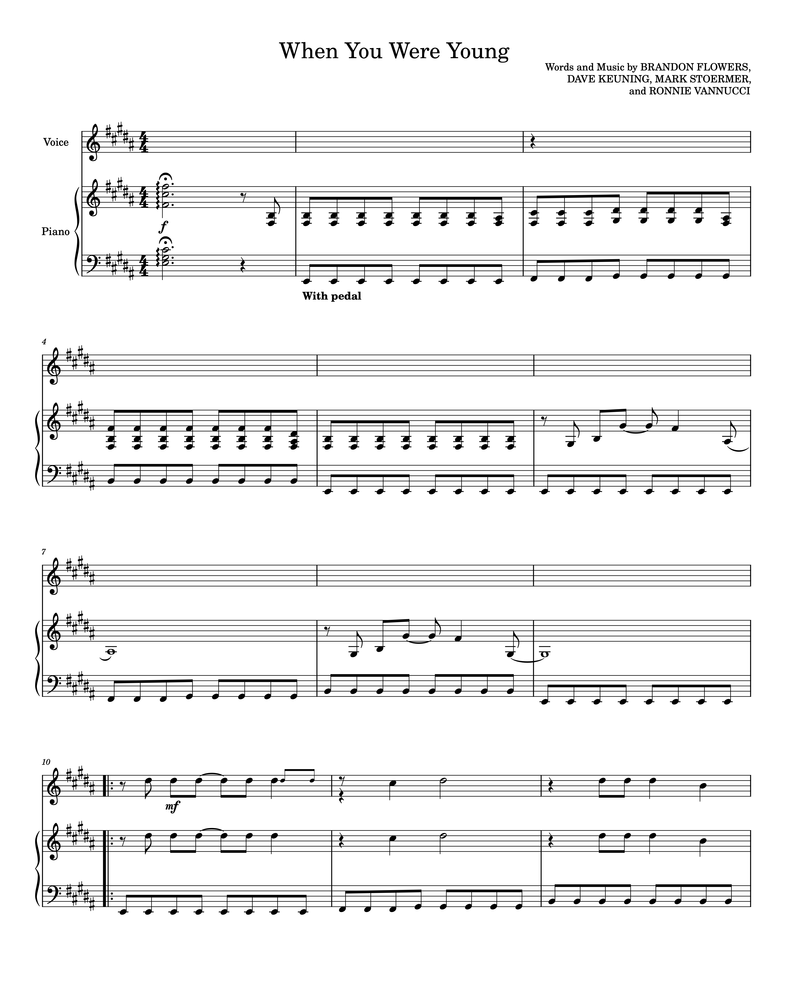
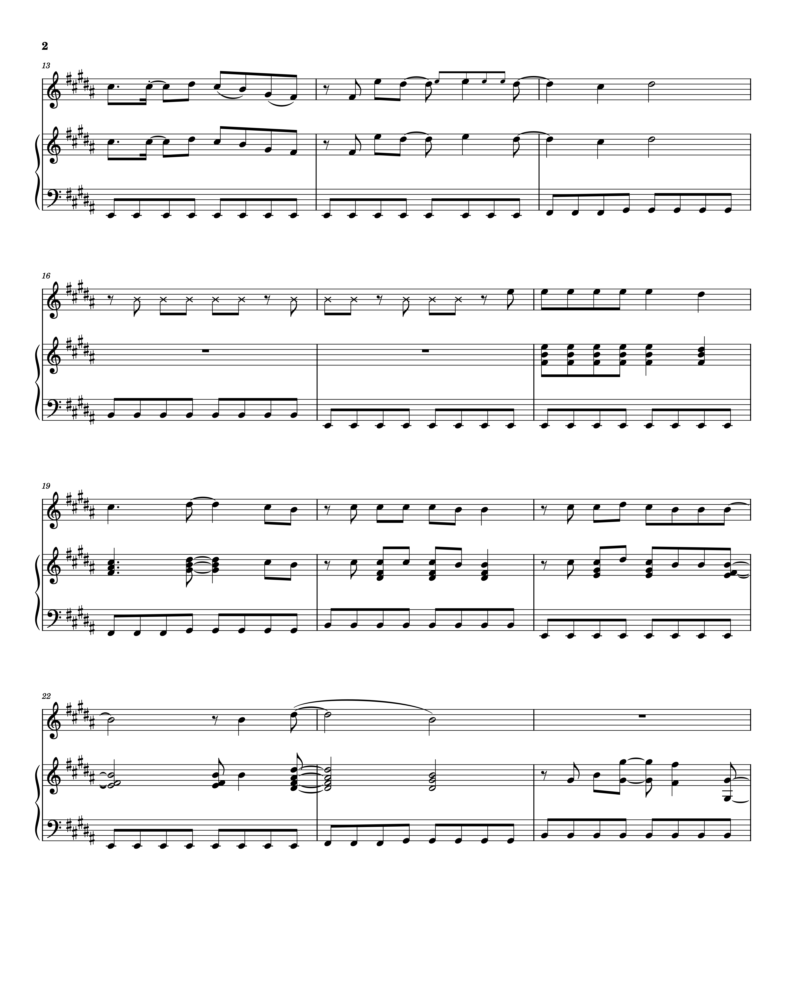
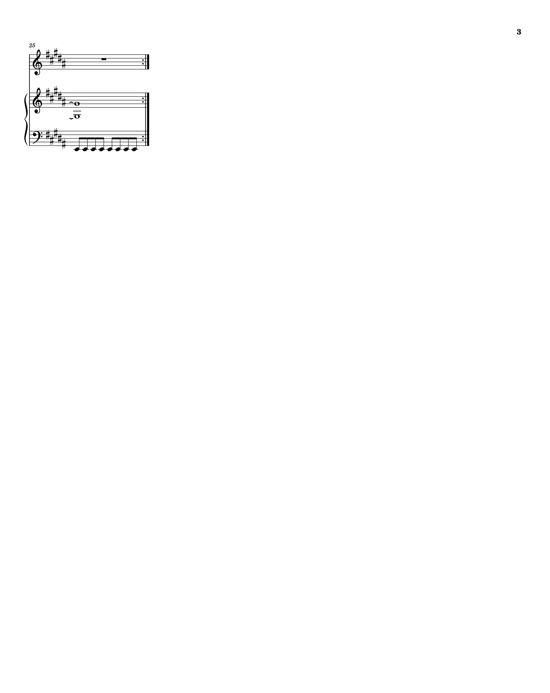

Task 1: Identify a piece of music, download the PDF and then convert it to MuseScore. Edit at least 10 bars in MuseScore.
For this task, I identified the song When You Were Young. This was the lead single from the band's second album, Sam's Town (2006), and it remains incredibly popular amongst fans to this day, with 555,066,098 streams recorded by Spotify as of October 25th, 2023.
This arrangement is for Piano, Vocal and Guitar, and it is in key B Major. The score can be downloaded here. It has been sourced from SheetMusic-Free.com
Transcription challenges
The source was a digitisation of a music sheet in great condition, which resulted in very few transcription errors when using the automated PDF import tool provided by MuseScore, particularly in contrast with the Mozart piece we imported as a group, which was digitised from an old source and contained many artifacts that made the import process challenging, as well as symbols that MuseScore added, or that it did not recognise. However, I did find some challenges despite working with source material which was in a relatively better condition.
Most of the issues I encountered related to symbols not recognised by MuseScore, such as the fermata above symbol and the cross notehead when Brandon Flowers (The Killers' vocalist) speaks instead of singing, or some not present in the source material added by the tool, such as the Pedal mark. However, these were fairly easy to overcome. Much more difficult were the issues presented by MuseScore 4 when working with time signatures, which prevented me from matching the source material in bars 14, 16 and 17. I could not add the fretboard diagrams that the source material featured either, as these were not available in MuseScore 4.
The edited score (25 bars) can be downloaded here.
Music Sheets
Below are the first two pages from the original music sheets, and my review and/or transcription of the first 17 bars:
Original Music Sheet
|  |  |  |
Transcription
|  |  |  |